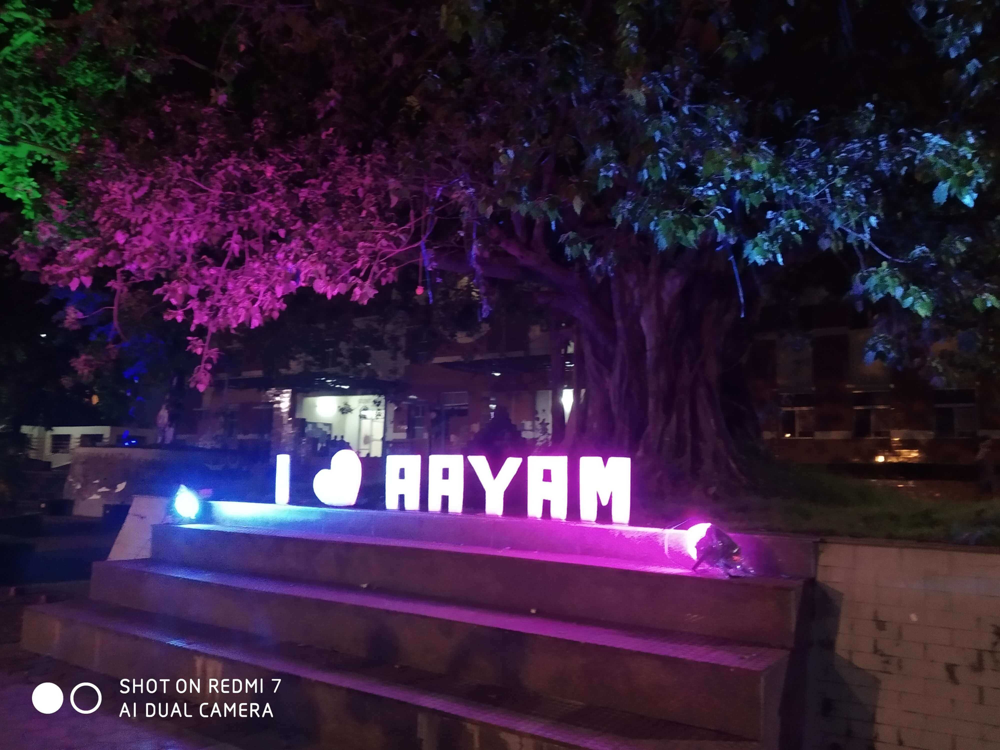
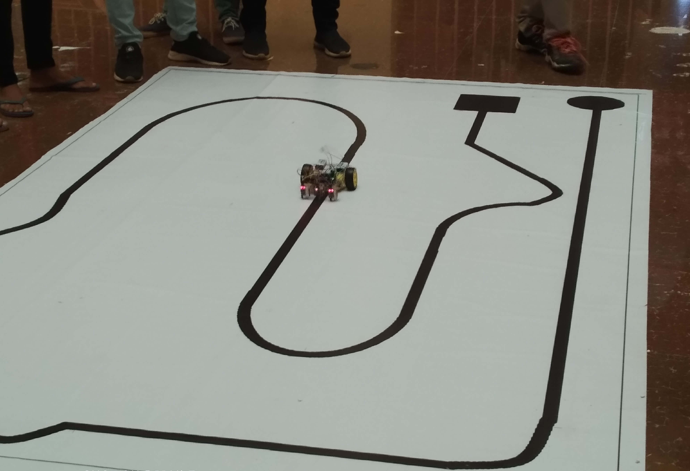
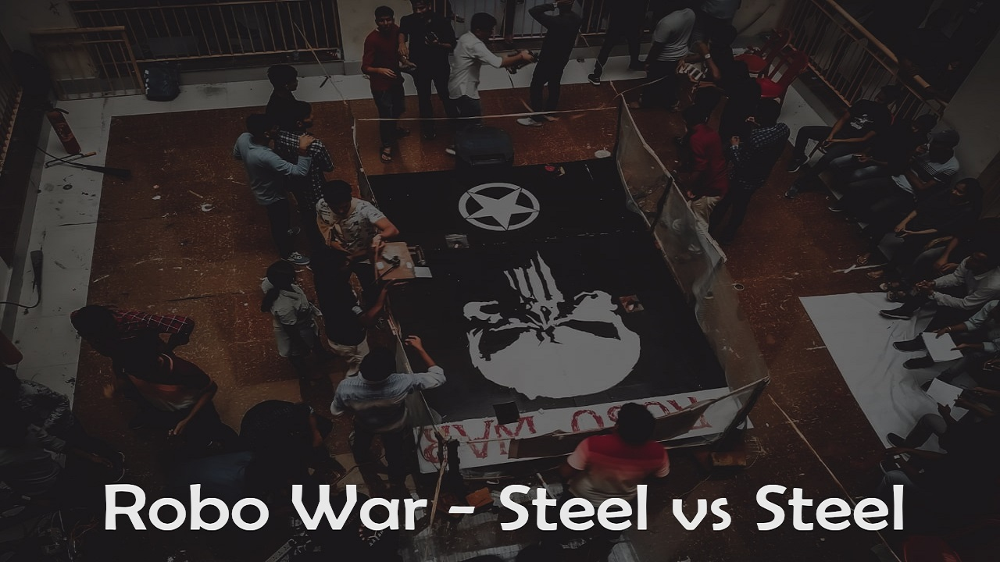
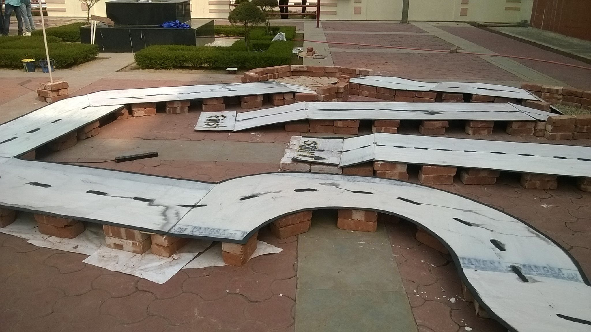
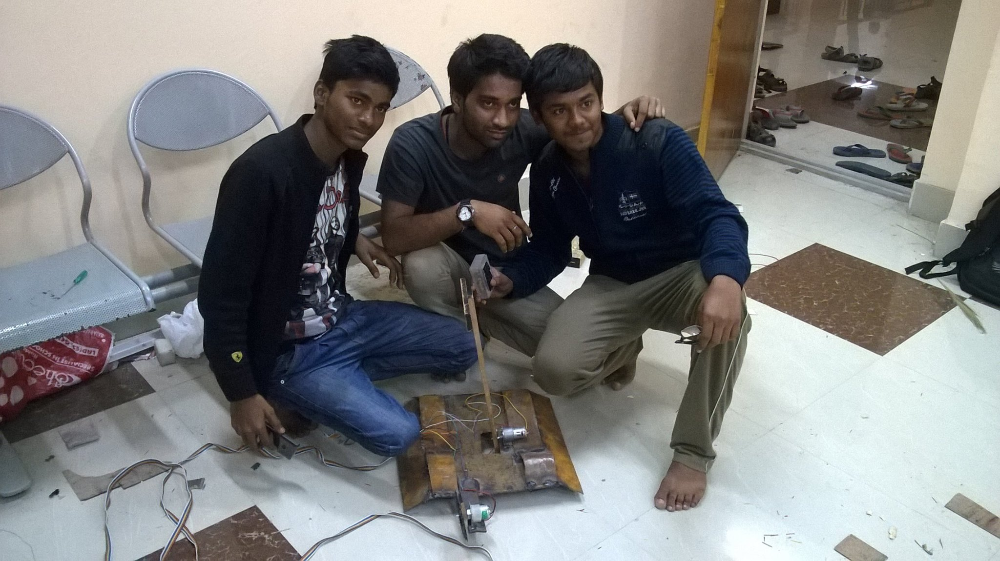
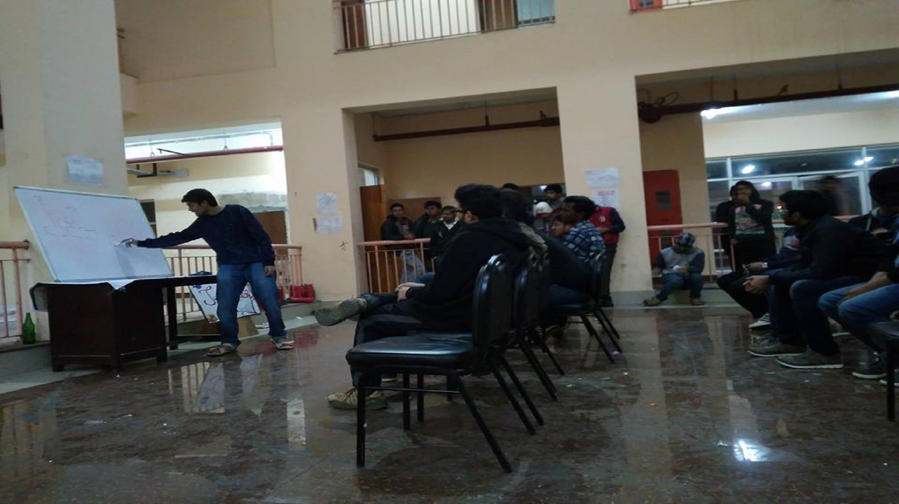

Student Orientation & Registration Program (SOAR)
SOAR aims to introduce the freshers to our robotics club.
Orientation Program is addressed by Director and Faculty Advisor.
The working body of ANARC present their several completed and ongoing projects.
You are welcome to witness the glorious journey of our club.
Following are the details of upcoming classes:
Programming
Electronic Circuits & Sensors
Course Completion Projects

SOAR
Every Year Soar is organised to include freshers into the club with a key initiative to learn Robotics

SOAR Class
You Need Not to be a pro in Robotics!!! Our Faculty and Top Senior Members of the Club are always there to guide you

SOAR Event
SOAR Event is backed by top Faculty Members of Our College
Technical Fest AAYAM
Aayam is arguably the biggest and most pompous of the technical events conducted during the fest.
It is organised by ASIMOV NIT-Agartala Robotics Club (ANARC), Aayam is a paradise for the tech-savvy which is full of enthusiasm.
It features competitions like:
Robowar,
Line Follower,
Prick-O-Blast,
Tech Expo, etc

AAYAM
Aayam is the most waited Tech Fest of NIT Agartala

Line Follower
An Automated Robot Following the line marked on the Road

RoboWar
A 2v2 Battle Between two teams with their bots fiting for Victory
Special Event TECHTOUR
Tech Tour is one of the most awaited events of ANARC which is organized during the month of March and April every year. Several technical activities are conducted and projects are performed under the supervision of allotted mentors. The tour aims to enhance technical and management skills and develop teamwork. List of competitions: DeathRace, Prick-O-Blast, Circuit-o-Geeks, Quiz, Tech Talk Afterward Winners are awarded and Top projects presented during Tech Talk are selected for funding through the club.

DeathRace
A Robotic Race in which the BOT has to overcome Obstacles during its running time

Working Team
Team of 4 to 5 Members work day and night giving their best for the Competitions

Planning Starts Here
The Planning of The Contest starts 6 months before with all the interested members